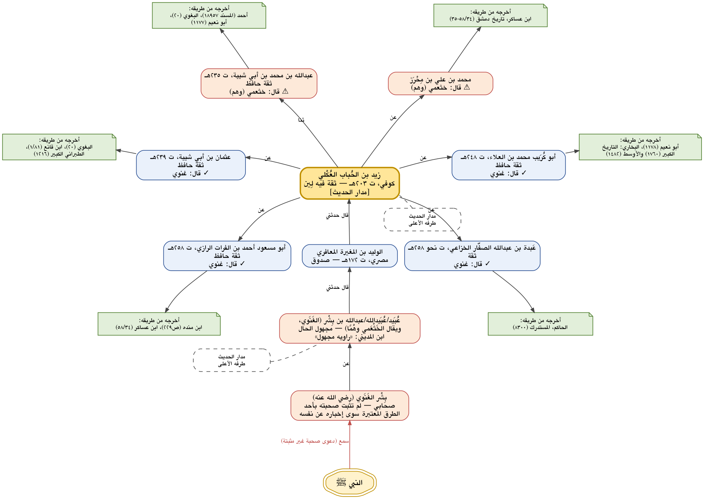

فهرس البحث
١. مصادر التخريج
لم يرد هذا الحديث في صحيح البخاري من رواية أبي ذر الهروي، ولا في صحيح مسلم، ولا في موطأ الإمام مالك (لا من رواية القعنبي ولا من غيرها). ووردت الإشارة إلى رواته في مصنّفات الإمام البخاري الأخرى، إذ أورد الحديث في "التاريخ الكبير" (٢/٨١؛ وكذلك ٥/٤٩، ٤٤٣؛ ورقم ١٧٦٠) وفي "التاريخ الأوسط" (رقم ١٤٨٢)، في ترجمتي الراويين عبيد بن بشر الغنوي ووالده، دون أن يورده في "الضعفاء الصغير".
وبعد فحص موطأ الإمام مالك وصحيح مسلم ودواوين السنة الأخرى، وُجد الحديث مخرَّجًا في المصادر الآتية:
- مسند الإمام أحمد بن حنبل، رقم (١٨٩٥٧).
- معجم الصحابة للبغوي، رقم (٢٠).
- معرفة الصحابة لأبي نعيم الأصبهاني، رقم (١١٧٧) و(١١٧٨).
- معجم الصحابة لابن قانع (١/٨١).
- المعجم الكبير للطبراني، رقم (١٢١٦).
- معرفة الصحابة لابن منده (ص ٢٢٩).
- المستدرك على الصحيحين للحاكم النيسابوري، رقم (٨٣٠٠).
- تاريخ دمشق لابن عساكر (٥٨/٣٤-٣٦)، نقلًا عن عدد من الطرق المتقدمة.
لم يوجد الحديث في سنن أبي داود ولا جامع الترمذي ولا سنن النسائي ولا سنن ابن ماجه ولا سنن الدارمي فيما وقفتُ عليه، ولم يوجد كذلك في مصنَّفي ابن أبي شيبة وعبد الرزاق الصنعاني.
ولمّا لم يثبت أنَّ هذا الحديث مروي في صحيح البخاري من طريق رواية أبي ذر الهروي، فإنَّ القاعدة المعتمدة في الموقع للاستغناء عن إعادة دراسة الإسناد لا تنطبق هنا، وتبقى الحاجة قائمة إلى دراسة إسنادية تفصيلية كاملة.
٢. شجرة الأسانيد
يدور هذا الحديث بجميع طرقه على راوٍ واحد هو زيد بن الحُباب بن الرَّيّان العُكْلي (ت ٢٠٣هـ)، الذي تفرَّد عنه بالرواية عن شيخه الوليد بن المغيرة المعافري ستةٌ من أصحابه، تفرَّقت بهم طرق التخريج الست.

المدار: زيد بن الحُباب العُكْلي — وتفرَّد الوليد بن المغيرة المعافري بالرواية عن الراوي المتوسط (ابن بشر)، كما تفرَّد هذا الأخير بالرواية عن أبيه الصحابي المزعوم بشر.
٣. دراسة الرواة
يقتصر ما يلي على دراسة كل طبقات هذا الإسناد، مع تقديم الجرح على التعديل في كل راوٍ اختُلف فيه.
بِشْر الغَنَوي (الصحابي المزعوم)
الجرح: لا يكفي في إثبات الصحبة مجرد تصنيف ابن حبان له في طبقة الصحابة، أو دعوى الراوي نفسه؛ فقد قرَّر ابن الصلاح، ونقله عنه النووي وابن جماعة وابن كثير والحافظ زين الدين العراقي، أنَّ ثبوت كون الشخص صحابيًّا يكون بأحد أربعة طرق: التواتر، أو الاستفاضة القاصرة عن التواتر، أو رواية آحاد الصحابة عنه أنه صحابي، أو إخباره هو عن نفسه بذلك بعد ثبوت عدالته. ولم تثبت صحبة بشر الغنوي بأيٍّ من الطرق الثلاثة الأولى، ولم تثبت له عدالة مستقلة تجيز قَبول إخباره عن نفسه؛ فتبقى دعوى صحبته غير مثبتة بدليل مستقل عن هذا الحديث نفسه.
التعديل: قال أبو حاتم الرازي: "مصري، له صحبة". وذكره ابن حبان في "الثقات" في طبقة الصحابة، وقال: "سمع النبي صلى الله عليه وسلم في فتح القسطنطينية". ونقل ابن حجر في "الإصابة" عن أبي علي بن السَّكن أنه قال: "عِداده في أهل الشام".
الترجيح: هذه الأقوال أوصافٌ لا ترقى إلى تعديل مستقل يثبت الصحبة، وهذا عين الدَّور الذي ينبغي التنبُّه له في مثل هذه الحالات: الاستدلال بالحديث نفسه على صحبة راويه، ثم الاستدلال بصحبته على صحة الحديث.
عُبَيد / عُبَيدالله / عبدالله بن بِشْر (الابن، الراوي المتوسط)
الجرح: صرَّح علي بن المديني بجهالته فقال عن هذا الطريق: "راويه مجهول" (نقله عنه ابن عساكر في "تاريخ دمشق" ٥٨/٣٦، والذهبي في "تاريخ الإسلام" دون تعقيبٍ منه بخلاف ذلك). ولم يوجد راوٍ عنه سوى الوليد بن المغيرة المعافري، واختُلف في اسمه ونسبه اختلافًا بيّنًا بين الرواة عن زيد بن الحُباب: فقيل "عبدالله"، وقيل "عُبَيدالله"، وقيل "عُبَيد" غير مضاف، ونُسب تارة إلى "الخَثْعَمي" وتارة إلى "الغَنَوي".
التعديل: ذكره ابن حبان في "الثقات" ضمن طبقة التابعين. وقال أبو حاتم الرازي: "من أقران عبدالله بن لهيعة" — وهي عبارة وصفية لا تفيد تعديلًا.
الترجيح: توثيق ابن حبان وحده لا يكفي لإثبات مرتبة القبول، لكونه من المتساهلين في التوثيق، ولا سيما مع عدم وجود راوٍ آخر غير الوليد بن المغيرة يُعتضَد به؛ فالراوي مجهول الحال. ورجَّح الباحث المعاصر صلاح الدين الإدلبي أنَّ من سمَّاه "الخَثْعَمي" (أبو بكر بن أبي شيبة) قد وهِم، وخلط بينه وبين راوٍ آخر مغاير هو "عبدالله بن بشر الخَثْعَمي الكاتب" الكوفي، من رجال الثوري وشعبة، ولم يذكر البخاري ولا أبو حاتم ولا ابن حبان أنَّ هذا الكاتب روى عن أبيه، مما يؤكد أنه شخصٌ آخر تمامًا.
الوليد بن المغيرة بن سليمان المعافري، أبو العباس، المصري
الجرح: لم أقف على جرحٍ فيه من المتقدمين. موضع الإشكال في هذا الإسناد ليس فيه هو نفسه، بل في تفرُّده بالرواية عمَّن هو مجهول الحال.
التعديل: وصفه صلاح الدين الإدلبي بأنه "مصري صدوق"، وترجم له البخاري في "التاريخ الكبير" وابن أبي حاتم في "الجرح والتعديل" وابن حبان في "الثقات" دون طعنٍ. توفي سنة ١٧٢هـ.
الترجيح: فهو مقبول الرواية في نفسه، وإنما موضع الإشكال تفرُّده عمَّن هو مجهول الحال.
زيد بن الحُباب بن الرَّيّان، أبو الحسين العُكْلي، الكوفي (مدار الحديث)
الجرح: قال أحمد بن حنبل، فيما نقله عبدالله ابنه: "زيد بن الحُباب كان صدوقًا... ولكن كان كثير الخطأ" (سؤالات أبي داود لأحمد، رقم ٤٣٢؛ العلل رواية عبدالله، رقم ٧٧). وقال يحيى بن معين، فيما نقله ابن عدي: "كان يقلب حديث الثوري".
التعديل: وثَّقه العِجلي فقال: "كوفي ثقة". وقال ابن عدي مدافعًا عنه: "زيد بن الحُباب له حديث كثير، وهو من أثبات مشايخ الكوفة ممن لا يُشَكُّ في صدقه"، موضحًا أن لينه الوارد عند ابن معين خاصٌّ بروايته عن الثوري تحديدًا.
الترجيح: زيد بن الحُباب ثقةٌ في الجملة، وإنما وقع فيه لِينٌ خاص بروايته عن سفيان الثوري تحديدًا، وهذا لا يمسّ روايته هنا عن الوليد بن المغيرة، إذ ليست من طريق الثوري. فليس في هذا الإسناد ما يستوجب الطعن في زيد بن الحُباب نفسه، وإنما موضع الضعف في الرواة الذين فوقه.
تلاميذ زيد بن الحُباب الستة (نقلة الطرق الست)
الجرح: لم يُذكر عن أيٍّ منهم جرحٌ مؤثر في هذا الباب.
التعديل: جميعهم من الثقات الحفّاظ المعروفين الذين لا خلاف معتبرًا في قَبولهم: عبدالله بن محمد بن أبي شيبة (ت ٢٣٥هـ)، وعثمان بن أبي شيبة (ت ٢٣٩هـ)، وأبو مسعود أحمد بن الفرات الرازي (ت ٢٥٨هـ)، وعَبْدة بن عبدالله الصفّار الخزاعي، وأبو كُرَيب محمد بن العلاء (ت ٢٤٨هـ)، ومحمد بن علي بن مِحْرَز.
الترجيح: وقع بينهم اختلاف في ضبط اسم شيخ الوليد بن المغيرة (شيخ شيخهم) لا في أصل الرواية عن زيد بن الحُباب. ولا يوجد بين رواة هذا الإسناد راوٍ متَّهم بالتشيّع أو أي بدعة أخرى.
٤. دراسة الاتصال والعلل
صيغ الأداء بين زيد بن الحُباب وشيخه الوليد بن المغيرة، وبين الوليد وشيخه ابن بشر، صريحتان في السماع ("حدَّثني")، ولا يُعرف عن أيٍّ منهما وصفٌ بالتدليس، فاتصال هذين الطبقتين ثابتٌ. أمَّا الرواية بين ابن بشر وأبيه فمعنعنة ("عن أبيه")، ولم أقف على تصريح بالسماع بينهما، غير أنه لا يُعرف عن ابن بشر وصفٌ بالتدليس أيضًا؛ فالعنعنة هنا لا تحمل قرينة تدليسية، وإنما يبقى الإشكال الحقيقي في هذا الإسناد قائمًا في هوية الأب وابنه وجهالة حالهما، لا في صيغة الأداء بينهما.
أمَّا دعوى سماع الأب (بشر) من النبي ﷺ فصريحة اللفظ ("أنَّه سمع النبي ﷺ يقول")، لكنها مبنية على ثبوت صحبته أصلًا، وقد تقدَّم أنَّ صحبته غير مثبتة بدليل مستقل.
أهم العلل المحيطة بهذا الإسناد:
- الاضطراب في اسم الراوي المتوسط ونسبه: فقد سُمِّي "عبدَالله بن بشر" و"عُبَيدَالله بن بشر" و"عُبَيد بن بشر"، ونُسب تارة إلى "الخَثْعَمي" وتارة إلى "الغَنَوي".
- الخلط بين هذا الراوي المجهول وراوٍ آخر مغاير معروف باسمٍ مشابه، وهو خلطٌ نشأ من تشابه الأسماء والأنساب.
- جهالة حال الراوي المتوسط (ابن بشر)، إذ لم يرو عنه سوى راوٍ واحد، ولم يوثِّقه سوى ابن حبان وحده، وقد صرَّح علي بن المديني بجهالته.
- عدم ثبوت صحبة الأب (بشر) بدليلٍ مستقل عن هذا الحديث نفسه.
- تفرُّد الوليد بن المغيرة بالرواية عن ابن بشر، مما يمنع من اعتضاد هذا الطريق بطريق آخر مستقل عنه في نفس الطبقة.
ولا يُغني عن ذلك تعدُّد طرق التخريج الستة عن زيد بن الحُباب، لأنَّ هذه الطرق كلها ترجع إلى مصدرٍ واحدٍ هو الوليد بن المغيرة المتفرِّد بالرواية عن ابن بشر، فليست طرقًا مستقلة تتقوّى بها الرواية، وإنما هي تفرُّعات متأخرة عن أصل واحد فيه الجهالة المشار إليها؛ ولا يُعتمد مفهوم "الصحيح لغيره" هنا لعدم استيفاء الشرط الأساس، وهو قيام إسناد صحيح مستقل يمكن أن ينضاف إليه غيره.
٥. تطبيق المعايير والضوابط العشرة
يُعرض الحديث أدناه على المستويات العشرة المعتمدة في قسم "المعايير والضوابط". بعض هذه المعايير مصمَّمٌ أصلًا لدراسة واقعة تاريخية متَّهَمٍ فيها شخصٌ بعينه، لا لتخريج حديثٍ مباشرة، وهذا موضَّح أمام كل معيار لا ينطبق.
صحيح البخاري (رواية أبي ذر الهروي)
النتيجة: لم يرد الحديث بهذه الرواية إطلاقًا.
موطأ مالك (رواية القعنبي) / التاريخ الكبير والصغير
النتيجة: لم يرد في موطأ مالك، لكنه ورد في "التاريخ الكبير" و"التاريخ الأوسط" للبخاري نفسيهما، مما استوجب دراسة إسنادية كاملة (أعلاه).
بقية الكتب الستة والمسند
النتيجة: لم يرد في الكتب الستة؛ ورد في مسند الإمام أحمد بسندٍ خُضع للدراسة الكاملة أعلاه.
المؤرخون
النتيجة: ورد في "تاريخ دمشق" لابن عساكر نقلًا عن الطرق المتقدمة، دون سندٍ مستقل يضيف قوة.
شهادة المعاصرين العدول
النتيجة: إذا كانت هذه البشارة بهذه العظمة، وتتعلق بحدث تاريخي كبير مثل فتح القسطنطينية، فهل يُعقل أن لا يرويها عن النبي ﷺ إلا شخص واحد، خاصة إذا كانت صحبته محل خلاف أو لم تثبت عند بعض أهل العلم؟ وهل من المنطقي أن لا يتناقل الصحابة هذا الحديث فيما بينهم، ولا يستشهد به القادة والجنود الذين خرجوا مرارًا لمحاولة فتح القسطنطينية، وهم يرجون أن يكونوا المقصودين بهذه البشارة؟ ثم عندما تحقق الفتح أخيرًا، أليس من الطبيعي أن يصبح هذا الحديث حديث الساعة، وأن يكثر ذكره في خطب العلماء وكتب المؤرخين ورسائلهم؟ وأليس من المتوقع أن يُنقل عن السلطان محمد الفاتح نفسه، أو عن معاصريه، أنه رأى في فتحه تحقيقًا لهذه البشارة؟ والأغرب من ذلك أن المصادر العثمانية المبكرة لا تُعرف فيما نعلم بوصفها محمد الفاتح بأنه «الأمير المبشَّر به»، مع أن هذا الوصف لو كان ثابتًا ومتداولًا آنذاك لكان من أبرز ما يُذكر في سيرته ومناقبه.
حجة الصمت العلمي
النتيجة: لا ينطبق
عدم احتجاج المعارضين بالرواية
النتيجة: لا ينطبق
الأدلة المادية والأثرية
النتيجة: إن فتح المدينة، في حد ذاته، لا يُعد دليلاً ماديًا على صحة البشارة، فهو حدث تاريخي يمكن أن يقع كما وقع فتح مدن كثيرة أخرى عبر التاريخ. وإنما يكون الاستدلال بالبشارة قائمًا إذا ثبتت الرواية وصحّت نسبتها، لا بمجرد وقوع الحدث نفسه.
التزكية النبوية للمدّعى عليه
النتيجة: لا ينطبق — هذا المعيار هو موضوع البحث نفسه، لا نتيجة تُقاس به.
روايات المعلوم عداؤهم
النتيجة: لا ينطبق
٦. أقوال الأئمة في الحديث نفسه
أقوال المتقدمين
علي بن المديني (ت ٢٣٤هـ): قال عن هذا الطريق: "راويه مجهول" (نقله ابن عساكر في "تاريخ دمشق" ٥٨/٣٦، والذهبي في "تاريخ الإسلام" دون تعقيبٍ يخالفه). ويُلاحَظ أنَّ عليَّ بن المديني نفسه أحد رواة هذا الحديث، فهو ناقلٌ له في الوقت الذي حكم فيه على أحد رواته بالجهالة.
أبو حاتم الرازي (ت ٢٧٧هـ): قال في ابن بشر: "من أقران عبدالله بن لهيعة"، وقال في بِشْر الأب: "مصري، له صحبة" — وكلا القولين وصفي، لا يرقى إلى تعديل مستقل.
محمد بن إسماعيل البخاري (ت ٢٥٦هـ): أورد الحديث في "التاريخ الكبير" و"التاريخ الأوسط" دون تصريح بتصحيح أو تضعيف، وهذا هو المعهود من منهجه في كتب "التاريخ".
ابن حبّان (ت ٣٥٤هـ): أدرج بِشرًا في طبقة الصحابة، وابنه في طبقة التابعين، ضمن كتابه "الثقات" المعروف بالتساهل في التوثيق، ولم يصرِّح بحكمٍ على الحديث ذاته.
أقوال المتأخرين والمعاصرين
أخرج الحاكم النيسابوري الحديث في "المستدرك"، ونُسب إليه وإلى الذهبي في بعض المصادر الثانوية تصحيحٌ له؛ غير أنَّ الذهبيَّ نفسَه في "تاريخ الإسلام" أورد حكم علي بن المديني بالجهالة دون تعقيبٍ يخالفه، وهذا تفاوتٌ بين موضعين من كتبه ينبغي التنبّه له.
محمد ناصر الدين الألباني: ضعَّف الحديث في "السلسلة الضعيفة" (رقم ٨٧٨) وفي "ضعيف الجامع الصغير" (رقم ٤٦٥٥)، وذكر الاختلاف في اسم "ابن بشر الغَنَوي"، وقال إن الحديث لم يصحّ عنده لعدم الاطمئنان إلى توثيق ابن حبان له وحده.
شعيب الأرنؤوط (في تحقيق المسند): حكم بأنَّ إسناده ضعيف لجهالة عبدالله بن بشر الخَثْعَمي، إذ انفرد بالرواية عنه الوليد بن المغيرة المعافري، ولم يُؤثَر توثيقه عن غير ابن حبان.
صلاح الدين الإدلبي (باحثٌ حديثيٌّ معاصر متخصص): بعد تتبُّع جميع الطرق وتمييز الخلط بين "ابن بشر الغَنَوي" و"ابن بشر الخَثْعَمي الكاتب"، ودراسة شرط ثبوت الصحبة، خلص إلى أنَّ إسناد هذا الحديث ضعيف.
تأكيدًا إضافيًا: تسجّل موسوعة الدرر السنية الحديثية نفس مصادر التخريج المذكورة أعلاه، وتورد حكم الألباني بالضعف، بما يتطابق مع نتيجة هذا التحقيق.
الخلاصة والحكم النهائي
لا شك أن السلطان محمد الفاتح من الشخصيات العظيمة في تاريخ الإسلام، فهو سلطان مجاهد فتح الله على يديه بلادًا كثيرة، ودخل في الإسلام بسببه أعداد كبيرة من الناس، ولا يزال أثر تلك الفتوحات قائمًا إلى يومنا هذا، إذ حافظت شعوب كثيرة على دينها بفضل تلك الفتوحات.
ومن هذا المنطلق، فإننا نحب السلطان محمد الفاتح ونجلّه، بل لكنا من أسعد الناس لو ثبتت صحة البشارة المنسوبة إلى النبي صلى الله عليه وسلم بشأن فتح القسطنطينية. ولكن الحق أحق أن يُتبع، ولا يجوز أن ننسب إلى رسول الله صلى الله عليه وسلم حديثًا لمجرد موافقته لما نحب أو لما نتمناه.
ومنهجنا في هذا الموقع واضح، فنحن لا نقبل الحديث إلا إذا ثبتت صحته بذاته، أي بسند صحيح متصل إلى النبي صلى الله عليه وسلم، دون الاعتماد على مقويات أو قرائن خارجية. فمجرد وقوع الحدث لا يكفي لإثبات أن النبي صلى الله عليه وسلم قاله، وإنما لا بد أن يثبت النقل نفسه ثبوتًا صحيحًا، حتى نستطيع أن نقول بيقين: قال رسول الله صلى الله عليه وسلم.
ومع ذلك، فإن عدم ثبوت هذه الرواية وفق المنهج الذي نتبناه لا ينقص من مكانة السلطان محمد الفاتح ولا من عظيم إنجازه. فنحن نحسبه من خيرة الأمراء الذين خدموا الإسلام، ونحسب الجيش الذي فتح القسطنطينية من خيرة الجيوش. فالنجاح في تحقيق هذا الفتح إنجاز تاريخي عظيم، وكل أمير قاد جيشه إلى فتح فهو نعم الأمير، وكل جيش حقق الفتح فهو نعم الجيش.
والله أعلم.